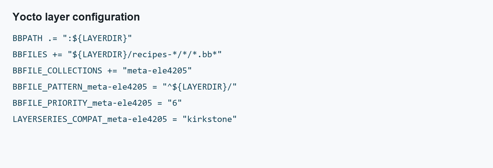

ELE4205 | 2025
Odroid C2 Linux build environment
A Yocto layer, board images and an embedded Linux development environment.
- Status
- Build archive
- Focus
- Embedded
- Tools and methods
- Yocto / BitBake / Odroid C2

Objective
Configure and organize an embedded Linux environment for an Odroid C2 target.
Engineering work
- Maintain a course-specific BitBake layer and recipe search paths.
- Associate the layer with the Yocto release used by the environment.
- Separate build configuration from generated target images.
- Document the boundary between the operating-system build and the application.
Outcome
The archive contains Poky, meta-openembedded, a meta-ele4205 layer and target image artifacts. The public configuration excerpt is drawn from the actual layer file.
Scope and limits
The final camera-security application source was not identified. Buildroot, a completed QR reader and a fully reproducible application release are not claimed by this case study.
Engineering workflow
- 01Layer configuration
- 02BitBake
- 03Target image
- 04Board deployment
Source excerpt BitBake
Actual archived layer configuration. This small excerpt does not include the full build environment.
BBPATH .= ":${LAYERDIR}"
BBFILES += "${LAYERDIR}/recipes-*/*/*.bb*"
BBFILE_COLLECTIONS += "meta-ele4205"
BBFILE_PATTERN_meta-ele4205 = "^${LAYERDIR}/"
BBFILE_PRIORITY_meta-ele4205 = "6"
LAYERSERIES_COMPAT_meta-ele4205 = "kirkstone"
Evidence and documentation
Archived meta-ele4205 layer configuration and Odroid C2 build artifacts. The cover is a typeset excerpt of a real file, not a fabricated IDE screenshot.